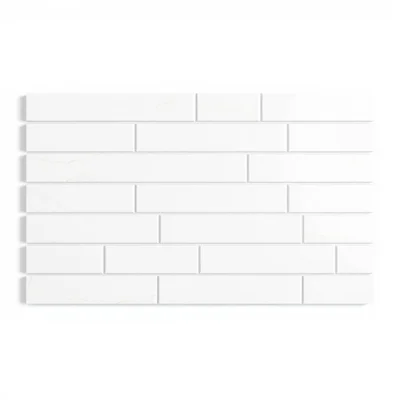

3D render of a tiled wall section, beveled marble subway tiles (kabanchik), white Carrara texture, classic layout, soft studio lighting, white background.

3D render of a wall section, beveled marble subway tiles, polished Calacatta gold marble, symmetrical layout, polished finish, isolated on pure white background, soft studio lighting, ambient occlusion, centered front view, professional product photography, 8k.